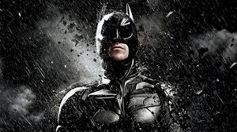

The masked vigilante of Gotham?

Batman has been Gotham City's protector for decades, CEO of Wayne
Enterprises, Patriarch of the Bat Family and veteran member of the
Justice League. Batman is a superhero co-created by artist Bob Kane
and writer Bill Finger. The character made his first appearance in
Detective Comics #27 (May, 1939). Batman is the secret identity of
Bruce Wayne. Witnessing the murder of his parents as a child leads him
to train himself to physical and intellectual perfection and don a
bat-themed costume in order to fight crime. Batman operates in the
Batcave, beneath Wayne Manor assisted by his butler Alfred Pennyworth.
The Dark Knight fights an assortment of villains influenced by the
characters' roots in film and pulp magazines. Unlike most superheroes,
he does not possess any superpowers; he makes use (to the best that he
can) of intellect, detective skills, science and technology, wealth,
physical prowess, and intimidation in his war on crime.
Dawn of Justice?
After the apparent death of Superman, Batman saw an individual dressed
like the Flash appear before him in the Batcave. Insisting that he
knew him, the individual urged Batman meet with Barry Allen before
disappearing. Urged by his suspicions, Batman uncovered a button in
one of the walls and met with Allen. Deciding to investigate this
together, they began to suspect that ramifications to the timeline
might have not been caused by Barry, but another influence. At some
point, he discovered the Joker was still alive and captured the Clown
Prince of Crime, holding him in the Batcave to help investigate the
truth of Nth. Batman reformed the Bat-Family with Batwoman and began
training Duke to become another vigilante for Gotham. Whilst saving a
falling airplane, Batman received help from two new heroes called
Gotham and Gotham Girl, two metahumans with powers similar to
Superman. Seeing them as a potential replacement for him, he took the
duo under his wing and helped them on the path to becoming Gotham's
new superheroes. However, after an encounter with Hugo Strange and the
Psycho Pirate, the two were rendered mentally damaged and, when Gotham
attacked the city, Batman was forced to fight him until his powers
drained his body, killing him. Taking Claire under his wing, Batman,
with the help of the rest of the Bat Family, stopped an attack
orchestrated by Strange, similar to one of their earliest encounters.